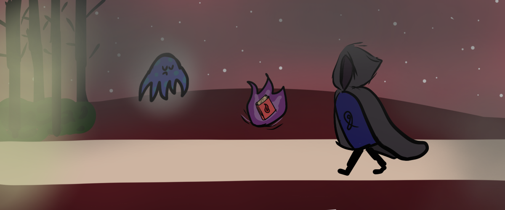
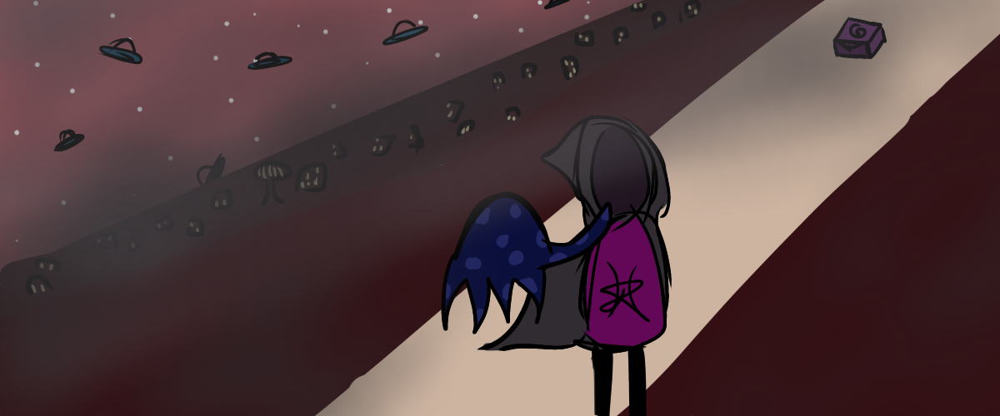
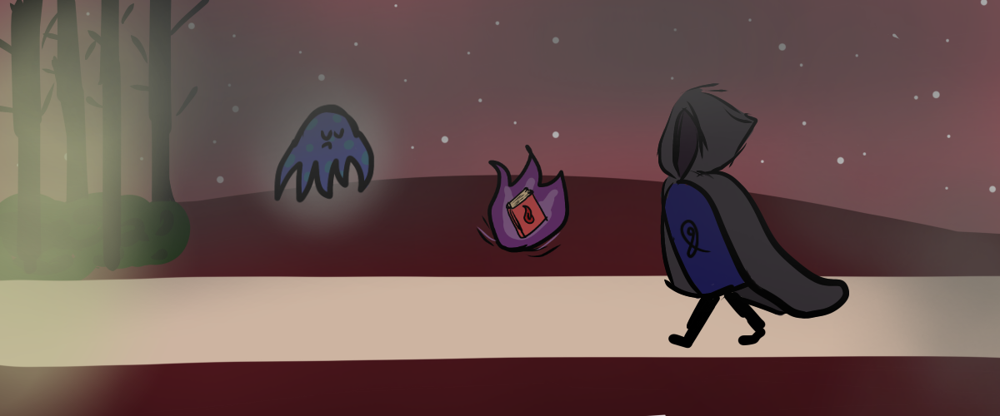
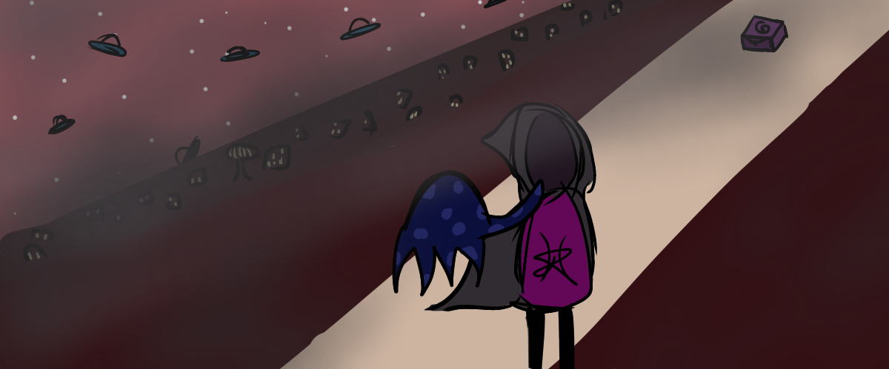

Projects
I tell you that I have certain skills. Well it wont mean anything unless I prove it, correct? Here is a showcase of some of the projects I've done for school or for fun!
WEB DESIGN
This website counts, right?
ARTISTIC
These past few months have made me want to better my art (thanks, pandemic) so here's some personal art:

 



So, the fantastical ones are actually art I did for a Hackathon I participated with my friends. Art I did for a whole day because the hackathon lasted for a weekend.
"El Tunel" was for a spanish project for a book we read with the title.
VIDEO
Here's two video edits I made a while back. Both were made on After Effects. The reason why I showcase these is to express that I know my way through a video editor. I can cut clips and add effects. And I can also show that I can embed videos into websites.
This was made on 4 October 2020
This was made on 25 November 2020.
Also my last video edit. I moved onto reading which took up a lot of my time. I'm thinking about getting back into it, see if my passion is still here.